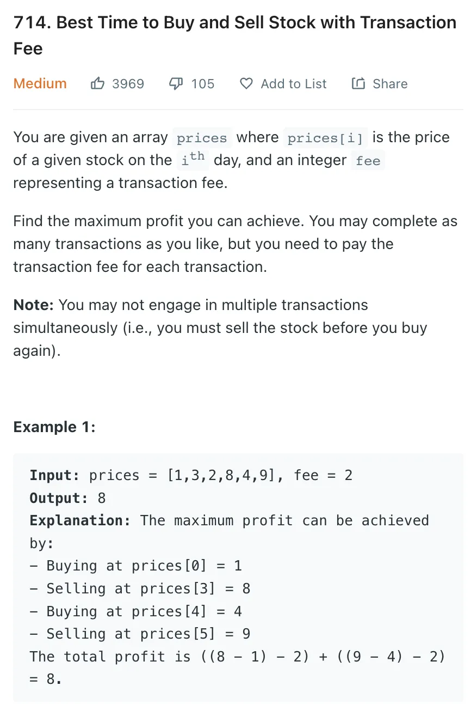
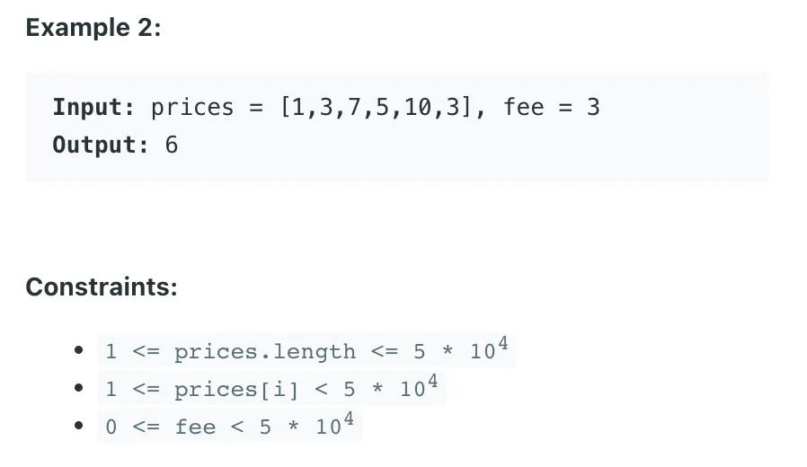

714. Best Time to Buy and Sell Stock with Transaction Fee
Question


✍🏽 My Solution
Runtime: 32 ms, faster than 24.00% of Java online submissions for Best Time to Buy and Sell Stock with Transaction Fee. Memory Usage: 74.9 MB, less than 43.01% of Java online submissions for Best Time to Buy and Sell Stock with Transaction Fee.
class Solution {
public int maxProfit(int[] prices, int fee) {
int n = prices.length;
int[][] dp = new int[n][2];
dp[0][0] = 0; // 不持有：dp[0][0] = 0
dp[0][1] = -prices[0]; //持有：dp[0][1] = −prices[0]
for (int i = 1; i < n; i++) {
dp[i][0] = Math.max(dp[i-1][0], dp[i-1][1] + prices[i] - fee);
dp[i][1] = Math.max(dp[i-1][1], dp[i-1][0] - prices[i]);
}
return dp[n - 1][0];
}
}
🧠 Thought Process
-
Why did I choose this particular implementation?
-
定义状态
每天有两种状态：持有股票、不持有股票。
dp[i][0]表示第i天不持有股票，赚到的最大利润
dp[i][1]表示第i天持有股票，赚到的最大利润（注意是第 i 天持有，而不是第 i 天买入）。
不持有：dp[i][0] = Math.max(dp[i-1][0], dp[i-1][1] + prices[i] - fee);
对于今天不持有，可以从两个状态转移过来：1. 昨天也不持有；2. 昨天持有，今天卖出。两者取较大值。 持有：dp[i][1] = Math.max(dp[i-1][1], dp[i-1][0] - prices[i]); 对于今天持有，可以从两个状态转移过来：1. 昨天也持有；2. 昨天不持有，今天买入。两者取较大值。 -
-
How do better solutions differ from my own?
- 這題跟122題寫法一樣，只是賣出的時候再扣掉手續費就好！！！
Solution #1 [空間優化 一維數組]
Runtime: 9 ms, faster than 41.78% of Java online submissions for Best Time to Buy and Sell Stock with Transaction Fee.
Memory Usage: 71.2 MB, less than 53.45% of Java online submissions for Best Time to Buy and Sell Stock with Transaction Fee.
class Solution {
public int maxProfit(int[] prices, int fee) {
int n = prices.length;
int[] dp = new int[2];
dp[0] = 0;
dp[1] = -prices[0];
for (int i = 1; i < n; i++) {
dp[0] = Math.max(dp[0], dp[1] + prices[i] - fee);
dp[1] = Math.max(dp[1], dp[0] - prices[i]);
}
return dp[0];
}
}
Explanation (in my words)
- How does their solution work?
- 转移的时候，dp[i]只会从 dp[i-1]转移得来，因此第一维可以去掉
- What is the space/time complexity of their solution?
- time: O(n)
- space: O(1)